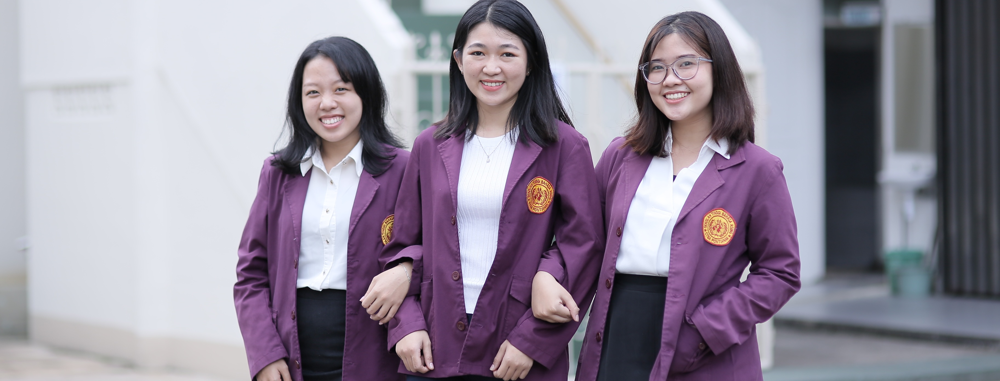

Yayasan atau badan hukum penyelenggara Sekolah Tinggi llmu Ekonomi ‘Indonesia’ Pontianak merupakan Yayasan Pendidikan Indograha Manajemen yang didirikan pada tanggal 12 Maret 1992 berdasarkan Akte Notaris Sri Rohani Wahyudi, S.H No. 34 dan telah terdaftar di Pengadilan Negeri Pontianak No. 08/Y.Y.PENDAF/1992/PN.PTK serta telah mendapat pengesahan Menteri Hukum dan HAM SK No. AHU 2276.AH.01.04 tahun 2010. Berdasarkan Surat Keputusan No. 073/D/O/1998, Menteri Pendidikan dan Kebudayaan R.I.cq. Direktorat Jenderal Pendidikan Tinggi cq. Kopertis XI Depdikbud R.I., maka didirikan Sekolah Tinggi llmu Ekonomi ‘Indonesia’ Pontianak (STIE ‘Indonesia’ Pontianak) yang menyelenggarakan Pendidikan di bidang ilmu Manajemen (Program Sarjana/S1) dan Akuntansi (Program Diploma Tiga/DIII).
 STBA
STBA
Yayasan atau badan hukum penyelenggara Sekolah Tinggi Bahasa Asing Pontianak merupakan Yayasan Pendidikan Indograha Manajemen yang didirikan pada tanggal 12 Maret 1992 berdasarkan Akte Notaris Sri Rohani Wahyudi, S.H No. 34 dan telah terdaftar di Pengadilan Negeri Pontianak No. 08/Y.Y.PENDAF/1992/PN.PTK serta telah mendapat pengesahan Menteri Hukum dan HAM SK No. AHU 2276.AH.01.04 tahun 2010. Akademi Bahasa Asing / ABA Pontianak berdiri pada tahun 1994 berdasarkan SK Dirjen Dikti Depdiknas & SK Mendikbud No. 065/D/0/94 dan menyelenggarakan Program Diploma Tiga Bahasa Inggris.Pada tahun 2006, ABA Pontianak memperoleh nilai akreditasi "B (Baik)" BAN-PT, selanjutnya ABA Pontianak kembali memperoleh nilai akreditasi "B (Baik)" BAN-PT pada tahun 2014. Berdasarkan SK Menteri Pendidikan dan Kebudayaan Republik Indonesia No. 590/E/0/2014 tanggal 17 Oktober 2014, ABA Pontianak diberi kepercayaan oleh Dirjen Dikti untuk menyelenggarakan Program Studi Sastra Inggris (Program Sarjana/S1) dan selanjutnya berubah bentuk menjadi Sekolah Tinggi Bahasa Asing / STBA Pontianak. Terhitung mulai tahun 2015, STBA Pontianak secara resmi menyelenggarakan Program Studi Sastra Inggris (Program Sarjana / S1) dan Program Studi Bahasa Inggris (Program Diploma Tiga / DIII).
 VISI
VISI
STBA “Menjadikan STBA Pontianak sebagai Sekolah Tinggi yang menghasilkan sumber daya manusia di bidang Bahasa Inggris dan Sastra Inggris yang unggul, mandiri, dan berbudaya multikultural di Indonesia”
STIE “Menjadikan STIE Indonesia Pontianak sebagai Sekolah Tinggi yang menghasilkan sumber daya manusia di bidang manajemen dan akuntansi yang unggul, mandiri, dan berbudaya multikultural di Indonesia.”
Program Study STIE
1. Program Sarjana, Program Studi Manajemen
2. Program Diploma Tiga, Program Studi Akuntansi
Terakreditasi B
.JPG)
Program Study STBA
1. Program Sarjana, program studi Bahasa Inggris
1. Program Diploma Tiga, program studi Bahasa Inggris
Terakreditasi B
Tempat Pendaftaran
Jalan Gajah Mada No. 38 Pontianak 78121/Telp : (0561) 734762 | Fax : (0561) 739168 | Email : admin@stieip.ac.id Pendaftaran Online : http://www.stieip.ac.id/
Kampus Utama

I am a very simple card. I am good at containing small bits of information. I am convenient because I require little markup to use effectively. I am a very simple card. I am good at containing small bits of information. I am convenient because I require little markup to use effectively.